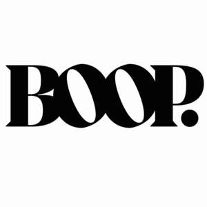
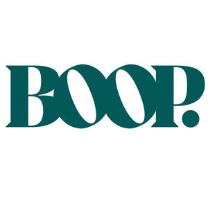
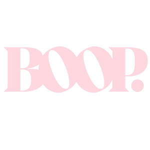

Trade Mark Journal No.2025/049 5 December 2025
UK00004301170 26 November 2025 (3,35)
Mark 1

Mark 2

Mark 3

- Class 3
- Cosmetic creams; Creams (Cosmetic -); Cosmetics and cosmetic preparations; Sunscreens [for cosmetic use]; Cosmetic moisturisers; Cosmetic soaps; Sunscreen [for cosmetic use]; Facial lotions [cosmetic]; Cosmetic facial lotions; Cosmetic soap; Lotions for cosmetic purposes; Cosmetic masks; Dyes (Cosmetic -); Cosmetic dyes; Tonics [cosmetic]; Facial creams [for cosmetic use]; Facial creams [cosmetic]; Cosmetic powder; Cosmetic oils; Cosmetic preparations; Anti-aging creams [for cosmetic use]; Facial cleansers [cosmetic]; Cosmetic pencils; Pencils (Cosmetic -); Cosmetic kits; Kits (Cosmetic -); Anti-ageing creams [for cosmetic use]; Facial moisturisers [cosmetic]; Anti-wrinkle creams [for cosmetic use]; Cosmetic skin fresheners; Lacquer for cosmetic purposes; Cosmetic creams for the skin; Skin creams [cosmetic]; Skin creams [for cosmetic use]; Pro-collagen for cosmetic purposes; Facial cream [for cosmetic use]; Henna for cosmetic purposes; Serums for cosmetic purposes; Skin cleansers [cosmetic]; Skin balms [cosmetic]; Cosmetic skin enhancers; Cosmetic tanning preparations; Collagen for cosmetic purposes; Cleansing creams [cosmetic]; Cosmetic hair lotions; Facial scrubs [cosmetic]; Cosmetic rouges; Self-tanning preparations [cosmetic]; Facial toners [cosmetic]; Lip coatings [cosmetic]; Skin cream [for cosmetic use]; Pomades for cosmetic purposes; Skin whitening preparations [cosmetic]; Anti-wrinkle cream [for cosmetic use]; Suncare lotions [for cosmetic use]; Anti-ageing serums for cosmetic purposes; After-sun lotions [for cosmetic use]; Toning creams [cosmetic]; Cosmetic creams and lotions; Adhesives for cosmetic purposes; Cosmetic sun-protecting preparations; Astringents for cosmetic purposes; Glitter for cosmetic purposes; Cosmetic facial masks; Facial masks [cosmetic]; Sunscreen creams [for cosmetic use]; Cosmetic sunscreen preparations; Acne cleansers, cosmetic; Toners for cosmetic purposes; Facial packs [cosmetic]; Cosmetic facial packs; Facial washes [cosmetic]; Lip stains for cosmetic purposes; Skin care lotions [cosmetic]; Cosmetic nail preparations; Cosmetic massage creams; Geraniol for cosmetic purposes; Cosmetic suntan lotions; Cosmetic suntan preparations; Cosmetic hand creams; Retinol cream for cosmetic purposes; Oils for cosmetic purposes; Cosmetic preparations for eyelashes; Eyelashes (Cosmetic preparations for -); Skin toners [cosmetic]; Skin care creams [cosmetic]; Cosmetic creams for skin care; Skin hydrators for cosmetic purposes ; Cosmetic products for the shower; Procollagen for cosmetic purposes; Pencils for cosmetic purposes; Cosmetic eye gels; Hair care creams [for cosmetic use]; Hair care lotions [for cosmetic use]; Gels for cosmetic purposes; Cosmetic sun-tanning preparations; Exfoliating scrubs for cosmetic purposes; Tooth powders [for cosmetic use]; Hair tonics [for cosmetic use]; Self tanning creams [cosmetic]; Cosmetic nourishing creams; Skin care (Cosmetic preparations for -); Cosmetic preparations for skin care; Skin conditioning creams for cosmetic purposes; Ointments for cosmetic use; Self tanning lotions [cosmetic]; Suntan oils for cosmetic purposes; Softening cleanser [cosmetic]; Moisturising concentrates [cosmetic]; Cosmetic face powders; Face powders [for cosmetic use]; Cosmetic eye pencils; Moisturising gels [cosmetic]; Artificial nails for cosmetic purposes; Moisturising skin lotions [cosmetic]; Cosmetics; Sun creams [for cosmetic use]; Skincare cosmetics; Moisturisers [cosmetics]; Hair cosmetics; Cosmetics for eye-lashes; Cosmetics for suntanning; Organic cosmetics; Anti-aging moisturizers used as cosmetics; Lip cosmetics; Nail cosmetics; Non-medicated cosmetics; Natural cosmetics; Skin moisturizers used as cosmetics; Cosmetics preparations; Mousses [cosmetics]; Make-up palettes containing cosmetics; Tanning oils [cosmetics]; Tanning gels [cosmetics]; Cosmetics in the form of lotions; Facial creams [cosmetics]; Beauty care cosmetics; Colour cosmetics; Self-tanning preparations [cosmetics]; Eyebrow cosmetics; Tanning preparations [cosmetics]; Eye cosmetics; Milks [cosmetics]; Body creams [cosmetics]; After-sun oils [cosmetics]; Skin masks [cosmetics]; Cosmetics for eye-brows; Tanning milks [cosmetics]; Functional cosmetics; Suntan oils [cosmetics]; Facial gels [cosmetics]; Skin care cosmetics; Fluid creams [cosmetics]; Cosmetics for children; Suntan lotion [cosmetics]; Non-medicated cosmetics and toiletry preparations; Cosmetics in the form of creams; Powder compacts [cosmetics]; Sun-tanning preparations [cosmetics]; Suntanning oil [cosmetics]; Colour cosmetics for the skin; After-sun milk [cosmetics]; After-sun milks [cosmetics]; Bath powder [cosmetics]; Skin recovery creams [cosmetics]; Night creams [cosmetics]; Body gels [cosmetics]; Body and facial creams [cosmetics]; Cosmetic products in the form of aerosols for skincare; Sun blocking lipsticks [cosmetics]; Cosmetics for use on the skin; Lip stains [cosmetics]; Body care cosmetics; Cosmetics in the form of powders; Cosmetics for the use on the hair; Cosmetics in the form of oils; Beauty lotions; Nail paint [cosmetics]; Sun protecting creams [cosmetics]; Perfumed powders [for cosmetic use]; Liners [cosmetics] for the eyes; Body and facial gels [cosmetics].
- Class 35
- Online retail services relating to cosmetics; Online retail store services relating to cosmetic and beauty products; Retail services in relation to toiletries; Retail services in relation to hair products.
Boop Beauty Limited